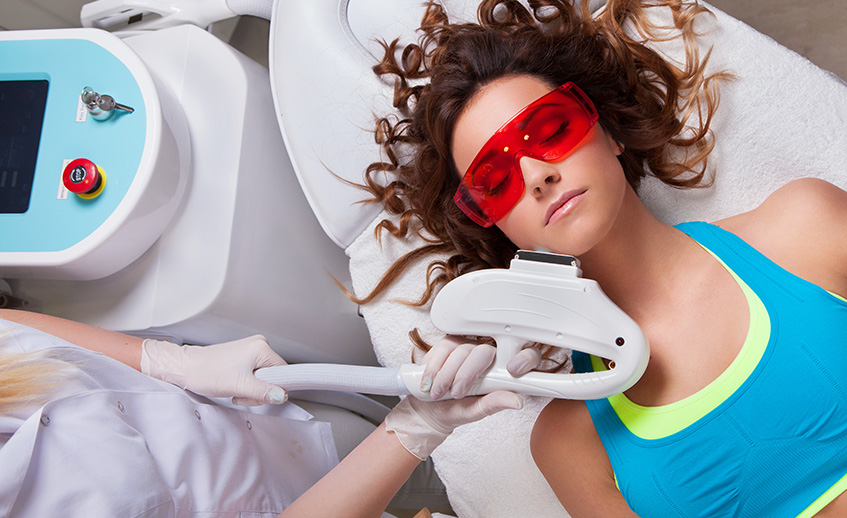
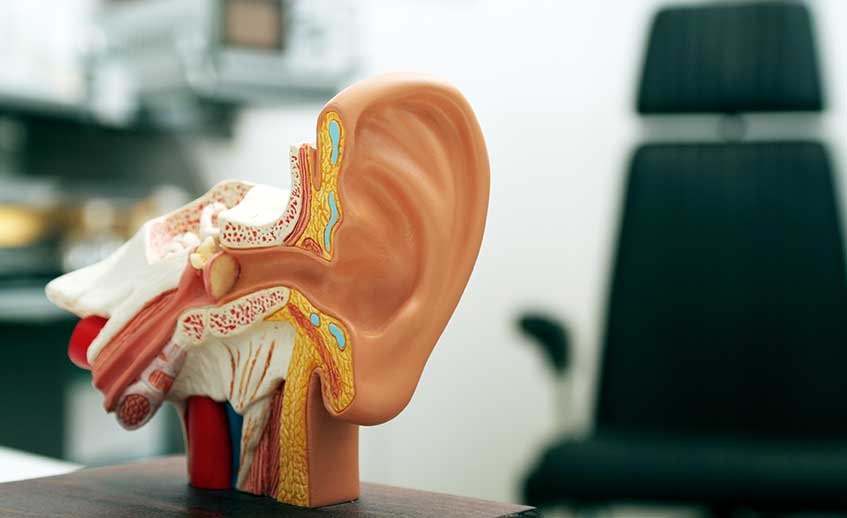

State-of-the-art laser equipment, the latest fat removal procedures, smart lipo and cellulite reduction — alongside medical ENT care.
Device and technique matched to your skin, not the other way around.
Skin rejuvenation · Wrinkles & lifting · Permanent hair removal · Tattoo removal · Medical skin care
Our laser clinic runs more than 17 platforms — Thermage CPT, pigment lasers, vascular lasers, hair-removal lasers, resurfacing lasers and CO2 lasers — operated by experienced physicians.
Because each tissue absorbs light at a different wavelength, a laser can be chosen to destroy only the target we want, which is why conditions that previously had no good treatment now respond well.
Before treatment we examine skin type and history, then match device and settings to the goal: pigment, vascular lesions, pores, laxity or hair removal. The device is chosen for the skin — not the other way around.
Fat removal planned around recovery, with body lifting and CoolSculpting options.
Liposuction · Body lifting · CoolSculpting
Fat is either subcutaneous (between skin and muscle) or visceral (around the organs); liposuction removes subcutaneous fat only. Subcutaneous fat divides again into superficial and deep layers, and the layer to be removed differs by body area.
Liposuction is for localized fat that does not respond to diet and exercise, and it works best on the jaw, neck, cheeks, arms, abdomen, buttocks, thighs, knees, calves and ankles rather than on generalized obesity.
How much fat is removed — typically up to about 2,500cc per session. Removing 6,000–7,000cc at once raises risk and may require transfusion, so larger volumes are staged over several sessions. The amount is set by health status and age, and blood loss is monitored throughout.
The process — consultation and preparation (body-fat measurement, blood work, stopping contraindicated medication, hydration), the surgical stage (anaesthesia screening and pre-operative marking), and aftercare (massage to relax tissue and activate lymphatic drainage, plus a compression garment to reduce swelling and hold the result).
The procedure runs about two hours under general anaesthesia; normal activity resumes in 2–3 days and recovery is largely complete in about a week. A compression corset or stocking is worn for roughly three months. Ultrasound-assisted liposuction converts electrical energy into mechanical vibration, creating micro-bubbles that release fat from cells — it spares vessels and nerves and reduces surface irregularity, but carries heat-related burn risk and takes longer.
Areas treated: abdomen, waist and flanks, thighs, buttocks, calves, arms, face and neck.
Recovery — 1–2 days of rest; localized cases can go home the same day. Bruising lasts 2–3 weeks, swelling resolves 70–80% by 3–4 weeks, satisfaction usually begins at one month, and objective comparison is meaningful at about three months. Light exercise from 2–3 weeks.
Aftercare — no nicotine for one to two months, keep the area elevated, wear compression for about two months (stockings 2–3 months), and pair with diet and exercise to hold the result.

Surgical and non-surgical procedures for the face, eyes, nose and breast.
Eye surgery · Nose surgery · Breast surgery · Anti-aging · Non-surgical procedures
Plastic surgery is the surgical specialty concerned with correcting structural deformity and functional defect — bringing form and function as close to normal as possible.
The field is also called plastic and reconstructive surgery: reconstructive work restores a patient to normal, aesthetic work goes beyond the norm, and plastic surgery covers both.
The line between aesthetic and reconstructive is rarely sharp, so procedures are grouped by primary aim. We perform fat grafting, eyelid and eye surgery, rhinoplasty, ear surgery, chin and neck contouring, facelift, breast reduction and augmentation, botulinum toxin, permanent hair removal and fillers (Restylane, Sculptra, Juvederm, Radiesse).

Skin and body maintenance between treatments, with medical supervision.
Cellulite reduction · Remineralization
MEDI-SPA is a simple concept with broad effects: it increases circulation to the treated area and adds thermal stimulation, which also excites receptors and produces a reflex and toning response.
Cellulite reduction — water pressure delivers energy directly to the area of concern, breaking down cellulite without the strain or side effects of other modalities.
Remineralization — massage along meridians and muscle meridians smooths biorhythm, relieving fatigue and restoring vitality.
Detoxification — sequential physical stimulation of body regions encourages toxins to leave through the lymphatic system.
Effects reported by patients include reduced fibrotic cellulite and swelling, muscle relaxation with better blood, lymph and nerve circulation, stress relief, improved digestion and organ function, reduced cardiac load, help with constipation, maintained flexibility and deeper sleep, and stronger ligaments and muscles.

Ear, nose and throat medicine — including sinus and sleep problems.
Sinus treatment · Sleep & snoring · Ear, nose and throat care
Allergic rhinitis is an overreaction of the nasal mucosa to a specific substance, marked by fits of sneezing, clear discharge and congestion. Itching around the eyes and nose, reduced sense of smell, headache, light sensitivity, tearing and fatigue often accompany it.
Medication suppresses the release of chemical mediators and works while it is taken, but there is no cure. Treatment therefore combines avoidance of triggers, nasal irrigation and medication, adjusting both symptoms and the patient's environment.
We also treat sinus disease and sleep and snoring problems. When symptoms persist or do not respond to medication, endoscopy and imaging are used to identify the cause before deciding on treatment.
No obligation. We will answer honestly, in your language.